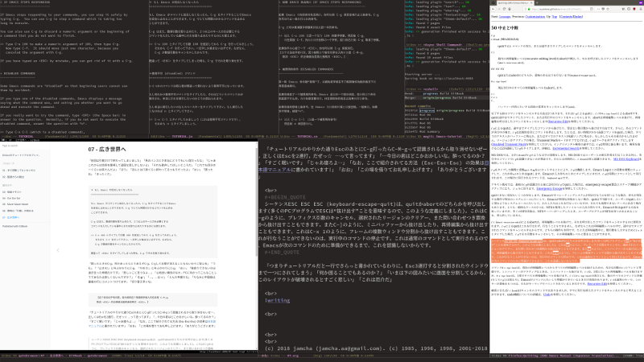

07 - 広き世界へ
「前回は引数だけで終わってしまいました」「馬のハンスとか本当にどうでもいい話だったな」「じゃあこれからは効率を重視して退屈な話しかしないよ」「それも勘弁してほしいところだ」「これでも四分の一くらいは来たんだよ」「ほう」「ほんとは八割くらい終わってるつもりだったよ」「おい」「困ったね」「まったくだ」
＊ もし Emacs が反応しなくなったら
==================================
もし Emacs がコマンドに反応しなくなったら、C-g をタイプすることでEmacs
を安全に止めることができます。C-g でとても時間のかかるコマンドを止める
ことができます。
C-g はまた、数値引数を取り止めたり、２つ以上のキー入力を必要とする
コマンドを入力している最中にそれを取り止めたりするのにも使えます。
>> C-u 100 とタイプして引数 100 を設定してから C-g を打ってみましょう。
それから C-f を打って下さい。一文字しか進まないはずです。なぜなら、
C-g が数値引数をキャンセルしたからです。
間違って <ESC> をタイプしてしまった時も、C-g でそれを取り消せます。
「困ったときのC-g。何かあったらとりあえずC-g。C-gして文章が消えることもないのでご安心を」「うむ」「『止まれ!』と叫ぶかわりにC-g。『やめろ!』と叫ぶかわりにC-g」「おい」「後戻りできないのは過ぎ去った時間だけです」「悲しいこと言うなよ…」「心地良い陽気のなか，PCに向かってこんなことしててあなたは寂しくないんですか？」「 C-g !」「…。…はっ!」「とんだ茶番だな」「ちなみに中国版は最後の行にコメントつけてます」「切り替え早いな」
【这个说法似乎有问题，因为按照这个按键顺序输入的应该是 C-M-g。
取消 <ESC> 的正确做法是再连按两次 <ESC>。】
「『チュートリアルのやりかた通りEscのあとC-g打ってもC-M-gって認識されるから取り消せないぜー，正しくはEscを2連打，だぜっ☆』 …って言ってます」「…今日の君はどこかおかしいな。酔ってるのか？」「すごく眠いです」「じゃあ寝ろよ…」「なお，ここで紹介されてる方法 (Esc-Esc-Esc) の効果は日本語マニュアルに書かれています!」「おお」「この場を借りてお礼申し上げます」「ありがとうございます」
シーケンスESC ESC ESC (keyboard-escape-quit)は、quitかabortのどちらかを呼び出します(多くのPCプログラムでESCは“抜け出す”ことを意味するので、このような定義にしました)。これはC-gのように、プレフィクス引数のキャンセル、選択されたリージョンのクリアー、また問い合わせつき置換から抜け出すこともできます。またC-]のように、ミニバッファーから抜け出したり、再帰編集から抜け出すこともできます。これはC-x 1のように、フレームの複数ウィンドウ分割から抜け出すこともできます。これが行なうことができないのは、実行中のコマンドの停止です。これは通常のコマンドとして実行されるので、Emacsが次のコマンドのために準備ができるまで、これを認識しないからです。
「なんと，チュートリアルだと一行でさらっと書かれているわりに，Escを3連打すると，分割されたウインドウまで一つにされてしまう (C-x 1) のだ!」「何か困ることでもあるのか？」「いまは下の図みたいに画面を分割してるから，このレイアウトが破壊されると故郷への郷愁にかられる」「それは厄介だ」

＊使用不可 (disabled) コマンド
==================================
いくつかのコマンドは初心者が間違って使わないよう使用不可になっています。
もし何れかの使用不可コマンドをタイプしたら、それはどういうコマンドかが
表示され、本当にそれを実行したいのかどうか訊ねられます。
もし本当に実行したいのならスペースキーをタイプして下さい。もし実行した
くなければ n とタイプして下さい。
>> C-x C-l とタイプしてみましょう（これは使用不可コマンドです）。
それから n とタイプしましょう。
「私はテレビゲームの中であってもこういう危険なものには手を出さない選択をしてきた」「今がそのときだ」「…」「？」「なんか，やれって言われるとやりたくなくなる」「…めんどくさいやつだな。じゃあ危険だからやめたほうがいいぞ」「うん」「おい」「ちなみに実行するとこんな画面が出てくる」
You have typed C-x C-l, invoking disabled command downcase-region.
It is disabled because new users often find it confusing.
Here’s the first part of its description:
Convert the region to lower case. In programs, wants two arguments.
These arguments specify the starting and ending character numbers of
the region to operate on. When used as a command, the text between
point and the mark is operated on.
Do you want to use this command anyway?
You can now type
y to try it and enable it (no questions if you use it again).
n to cancel--don’t try the command, and it remains disabled.
SPC to try the command just this once, but leave it disabled.
! to try it, and enable all disabled commands for this session only.
「…しっかり実行してるじゃないか」「あたりまえでしょ，チュートリアルなんだから」「どんな機能だ？」「指定範囲 (リージョン) 内の文字を小文字にする。日本語には効かない」「残念だな」「でも英語読めない人がこんな画面見たらぞっとすると思う」「たしかに」「君は英語に慣れてるからわからないと思うけど，読めない言語がどれくらい怖いかタイ語で見せてあげるね」「タイ語…」
* คำสั่งที่ถูกปิดทาง (disable)
------------------------
คำสั่งบางคำสั่งถูกปิดทางไว้ เพื่อที่จะป้องกันไม่ให้ผู้ที่เริ่มต้นใช้ (beginning user) ใช้ได้
โดยไม่ได้ตั้งใจ.
ถ้าท่านป้อนคำสั่งประเภทนี้แล้ว, อีแมกส์จะแสดงข้อความว่าคำสั่งนั้นคืออะไร, และจะถาม
ท่านว่าต้องการจะประมวลผลคำสั่งนั้นหรือไม่.
ถ้าท่านต้องการที่จะประมวลผลคำสั่งนั้นจริงๆ, กดปุ่ม space เพื่อตอบยืนยันความต้องการ.
โดยปรกติแล้ว, ถ้าท่านไม่ต้องการจะประมวลผลคำสั่งที่ถูกปิดทางไว้, ก็ตอบ "n" เท่านั้น.
>> ลองใช้คำสั่ง C-x C-l (ซึ่งเป็นคำสั่งที่ถูกปิดทางไว้), แล้วป้อน "n" เพื่อเป็นการตอบ
คำถาม.
「怖いを通り越して判断が停止するな」「時折現れる英語が癒しに思えるね…」
＊ウィンドウ
============
Emacs は幾つものウィンドウに、それぞれ個別の文章を表示することができま
す。どうやって複数のウィンドウを操作するかは後程説明しますが、ここでは、
どうやって余分なウィンドウを消して、元の一つのウィンドウの状態に戻るか
を説明します。それは簡単です。
C-x 1 ウィンドウを１つにする（つまり他のウィンドウを全部消す）
つまり C-x を打ってからさらに 1 を打つのです。このコマンドはカーソルの
あるウィンドウを画面全体に広げます。他のウィンドウは全部消えます。
「Emacsで画面分割する価値を昔はわかってなかったけど今は痛いほどわかる」「exwmを使ってるからか」「そうそう」「このC-x 1がさっき君の言った憎きコマンドなわけだな」「憎いってわけじゃないけど，今は実行されると故郷への郷愁にかられる」「君のいう故郷とは何のことだ？郷愁？」「私に説明を求めると壮大なファンタジーが始まるけどいい？」「遠慮しよう。ただでさえ脱線ばかりでまともに進んでいないんだからな」「…」「おい，残念そうな顔をするな」
>> カーソルをこの行に持ってきて、C-u 0 C-l とタイプしてみて下さい。
>> 続いて C-h k C-f とタイプして下さい。
** C-h k has been rebound, but you can use <f1> k instead [More] **
新しいウィンドウが C-f コマンドの説明文を表示するために現れるととも
に、このウィンドウがどのように縮むかを見て下さい。
>> C-x 1 とタイプして、説明文を表示していたウィンドウが消えるのを見て下さい。
このコマンド (C-x 1) はこれまでに覚えたコマンドとは異なり、２つのキー
からなります。最初のキーが Control-x です。このキーは、多くのコマンド
を始めるための最初のキーです。それらのコマンドの多くはウィンドウ、ファ
イル、バッファ、それらに関係するものを操作するためのもので、２あるいは
３、４個のキーを必要とするものがあります。
「ここだと反映されてないけど，C-h kのところの色が変わってる」「なぜだ？」「私がC-hにバックスペースを割り当ててるから」「ふむ」「チュートリアルの [More] のところでリターンを押すと，チュートリアルで使うコマンドのどれを私が変更してるかがわかる」
The following key bindings used in the tutorial have been changed
from the Emacs default:
Standard Key Command In Your Emacs
C-h c describe-key-briefly <f1> c more info
C-h k describe-key <f1> k more info
C-h m describe-mode <f1> m more info
C-x o other-window C-t more info
C-z suspend-frame C-x C-z more info
It is OK to change key bindings, but changed bindings do not
correspond to what the tutorial says.
「君がチュートリアルを起動したときにも冒頭に色の違う文章があったな。あれも君にあわせて調整しなおしたのか？」「たぶんそうだと思う。私がコマンド変えてるから」「よく考えられているな」「うん。ひっそり入ってるのがもったいないくらい」
「次から本格的な編集機能に入っていきます」「ようやくか」
「…どうしよう」「何だ」「ざっと見たら複雑そうで冗談が言えなそう…」「いいじゃないか」「それだとチュートリアルをプレイ (play) じゃなくてリード (read) になっちゃう…」「すまんが私は冗談が言えない」
「…」
「おい，こんな状態でこれから進めていくつもりか…？」
「ずっと昔…」「ああ」「英会話のビデオの支払い忘れてて電話で通知が来たの」「…」「払ったはずなのに払ってないって言われて…すごくこわかった」「忘れよう，昔の話なんだろう？」「あとで振込用紙が積んだ紙のなかから見つかって…」「ちゃんと払ったんだろう。よかったじゃないか」「あのとき見つからなかったらどうなってたんだろう…ああ…」」
「まずい。危険だ。今すぐ休め」「…」
「ほら，布団。ペンギン」「ぺんぎんさん」「…」「ペンギンじゃなくてぺんぎんさん」「ぺ，ぺんぎんさん，な。ほら。枕の隣に置いて。音楽は要るか？」「…いい…」「じゃ，じゃあ…おやすみ…」「…」
『…どうすればいいんだ…』
(c) 2018 jamcha (jamcha.aa@gmail.com). (c) 1985, 1996, 1998, 2001-2018 Free Software Foundation, Inc.